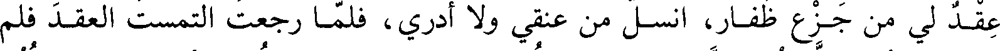
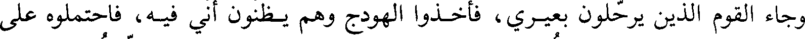
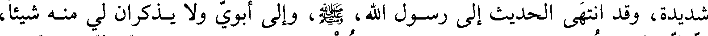

File: 000750.gt.txt (if the image is defective, simply delete all Arabic text and the line will be excluded)

عقد لي من جزع ظفار، انسل من عنقي ولا أدري، فلما رجعت التمست العقد فلم
File: 000751.gt.txt (if the image is defective, simply delete all Arabic text and the line will be excluded)
أجده، [وأخذ الناس في الرحيل]، فرجعت إلى المكان الذي كنت فيه التمسه فوجدته،
File: 000752.gt.txt (if the image is defective, simply delete all Arabic text and the line will be excluded)

وجاء القوم الذين يرحلون بعيري، فأخذوا الهودج وهم يظنون أني فيه، فاحتملوه على
File: 000753.gt.txt (if the image is defective, simply delete all Arabic text and the line will be excluded)

عادتهم وانطلقوا، ورجعت إلى المعسكر وما فيه من داع ولا مجيب، فتلففت بجلبابي
File: 000754.gt.txt (if the image is defective, simply delete all Arabic text and the line will be excluded)
واضطجعت في مكاني، وعرفت أنهم يرجعون إلي إذا افتقدوني.
File: 000755.gt.txt (if the image is defective, simply delete all Arabic text and the line will be excluded)
قالت: فوالله إني لمضطجعة إذ مر بي صفوان بن المعطل السلمي، وقد كان تخلف
File: 000756.gt.txt (if the image is defective, simply delete all Arabic text and the line will be excluded)

عن العسكر لحاجته، فلم يبت مع الناس، فلما رأى سوادي أقبل حتى وقف علي
File: 000757.gt.txt (if the image is defective, simply delete all Arabic text and the line will be excluded)
فعرفني، وكان رآني قبل أن يضرب الحجاب، فلما رآني استرجع وقال: ما خلفك؟
File: 000758.gt.txt (if the image is defective, simply delete all Arabic text and the line will be excluded)

قالت: فما كلمته، ثم قرب البعير وقال: اركبي. فركبت، وأخذ برأس البعير مسرعا.
File: 000759.gt.txt (if the image is defective, simply delete all Arabic text and the line will be excluded)
فلما نزل الناس واطمأنوا اطلع الرجل يقودني، بي فقال أهل الإفك [في] ما قالوا،
File: 000760.gt.txt (if the image is defective, simply delete all Arabic text and the line will be excluded)
فارتعج(2)العسكر، ولم أعلم بشيء من ذلك ثم قدمنا المدينة، فاشتكيت شكوى
File: 000761.gt.txt (if the image is defective, simply delete all Arabic text and the line will be excluded)

شديدة، وقد انتهى الحديث إلى رسول الله، صلي الله عليه و سلم، وإلى أبوي ولا يذكران لي منه شيئا،
File: 000762.gt.txt (if the image is defective, simply delete all Arabic text and the line will be excluded)
إلا أني أنكرت من رسول الله، صلي الله عليه و سلم، بعض لطفه، فكان إذا دخل علي وأمي تمرضني
File: 000763.gt.txt (if the image is defective, simply delete all Arabic text and the line will be excluded)

قال: كيف تيكم؟ لا يزيد على ذلك، فوجدت في نفسي مما رأيت من جفائه، لي فاستأذنته
File: 000764.gt.txt (if the image is defective, simply delete all Arabic text and the line will be excluded)

في الانتقال إلى أمي لتمرضني، فأذن لي، وانتقلت ولا أعلم بشيء مما كان، حتى نقهت
File: 000765.gt.txt (if the image is defective, simply delete all Arabic text and the line will be excluded)

من وجعي بعد بضع وعشرين ليلة.
File: 000766.gt.txt (if the image is defective, simply delete all Arabic text and the line will be excluded)
قالت: وكنا قوما عربا لا نتخذ في بيوتنا هذه الكنف، نعافها ونكرهها، إنما كانت
File: 000767.gt.txt (if the image is defective, simply delete all Arabic text and the line will be excluded)
النساء يخرجن كل ليلة، فخرجت ليلة لبعض حاجتي، ومعي أم مسطح ابنة أبي رهم بن
File: 000768.gt.txt (if the image is defective, simply delete all Arabic text and the line will be excluded)

المطلب، وكانت أمها خالة أبي بكر الصديق، قالت: فوالله إنها لتمشي، إذ عثرت في
File: 000769.gt.txt (if the image is defective, simply delete all Arabic text and the line will be excluded)

مرطها فقالت: تعس مسطح. قالت: قلت: لعمر الله بئسما قلت لرجل من المهاجرين
File: 000770.gt.txt (if the image is defective, simply delete all Arabic text and the line will be excluded)
فوالله ما قدرت على أن أقضي حاجتي، فرجعت، فما زلت ابكي حتى ظننت أن البكاء
File: 000771.gt.txt (if the image is defective, simply delete all Arabic text and the line will be excluded)

سيصدع كبدي، وقلت لأمي: تحدث الناس بما تحدثوا، به ولا تذكرين لي من ذلك شيئا؟
File: 000772.gt.txt (if the image is defective, simply delete all Arabic text and the line will be excluded)
قالت: أي بنية خفضي عليك، فوالله قلما كانت امرأة حسناء عند رجل يحبها لها
File: 000773.gt.txt (if the image is defective, simply delete all Arabic text and the line will be excluded)

ضرائر، إلا كثرن، وكثر(1) الناس عليها. قالت: وقد قام رسول الله، صلي الله عليه و سلم، في الناس
File: 000774.gt.txt (if the image is defective, simply delete all Arabic text and the line will be excluded)
فخطبهم، ولا اعلم بذلك، ثم قال: أيها الناس ما بال رجال يؤذونني في أهلي، ويقولون
File: 000775.gt.txt (if the image is defective, simply delete all Arabic text and the line will be excluded)

عليهن غير الحق، ويقولون ذلك لرجل والله ما علمت عليه إلا خيرا، وما دخل بيتا من
File: 000776.gt.txt (if the image is defective, simply delete all Arabic text and the line will be excluded)

بيوتي إلا معي.
File: 000777.gt.txt (if the image is defective, simply delete all Arabic text and the line will be excluded)

وكان كبر ذلك عند عبد الله بن أبي بن سلول، في رجال من الخزرج، مع الذي
File: 000778.gt.txt (if the image is defective, simply delete all Arabic text and the line will be excluded)

قال مسطح، وحمنة بنت جحش، وذلك أن زينب أختها كانت عند رسول الله، صلي الله عليه و سلم،
File: 000779.gt.txt (if the image is defective, simply delete all Arabic text and the line will be excluded)

فأشاعت من ذلك ما أشاعت، تضارني لأختها، فلما قال رسول الله، صلي الله عليه و سلم، تلك المقالة
To Save: `Ctrl+s`, make sure to choose `Webpage, complete`!